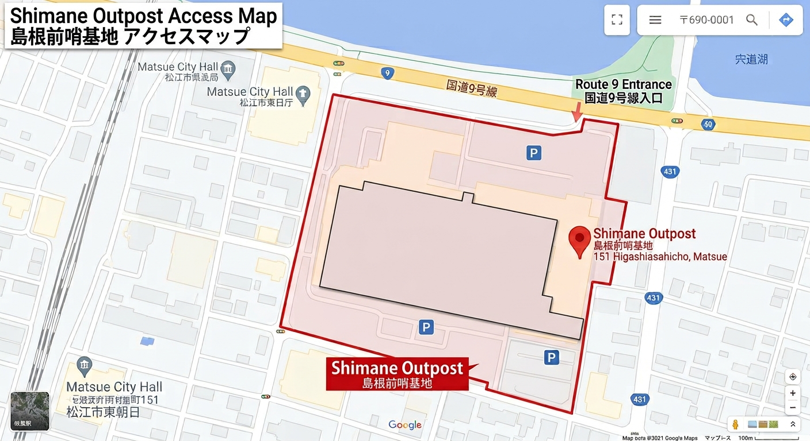

店舗情報・規則
【店舗情報】

| フィールド名 | 島根前哨基地 |
|---|---|
| 住所 | 〒690-0001 島根県松江市東朝日町１５１ |
| アクセス | 松江駅から徒歩7分！南口から出て東方向にまっすぐ歩いけばつきます！ |
| 営業時間 |
【毎週金曜日】 18:00〜22:00
【毎週土曜日・日曜日】 10:00〜17:00 |
| 定休日 | 毎週月〜木曜日 |
【ルール等についてのご案内】
装備について
| 使用可能BB弾 | 0.25ｇ以下のバイオ弾、発光バイオ弾 |
|---|---|
| 初速 |
0.20ｇ→初速98ｍ/ｓ未満
0.25ｇ→初速87ｍ/ｓ未満 0.28ｇ→初速83ｍ/ｓ未満 |
- お持ち込み頂いたエアソフトガンのパワーは弾速測定器にて運営スタッフがチェックを致します。新品、未改造、中古品、別の場所で測定済みに関わらず測定を行います。
- co2カートリッジ、グリーンガスの日本国内で販売されている物のみ使用可能。
- タクティカルライトは1000ルーメン以下で使用可。
- レーザー類の使用禁止。（レーザーが点灯しない状態であれば装着可）
- 銃口が尖っているエアソフトガン、インナーバレルが出ているエアソフトガンの使用禁止。
- スパイク付シューズ、アイゼンの使用禁止。
- お客様でのレンタルガンの調整はお止めください。レンタルガンの不調や調整は運営にお渡しいただくようお願いします。
セーフティーエリアでのルール
- ゲーム中以外は銃口を絶対に人に向けない。
- ゲームエリア外ではセレクターをセーフティに入れる。（コッキングしないとセーフティに入らないものも、セーフティにセレクターを入れてください）
- トリガー(引き金)に指をかけない。
- マガジンを装着しない。
- 空撃ちをしない。
ゲームルール
- ゲーム開始前にエアソフトガンを人に向けて撃たないでください。
- 全身ヒット制。エアソフトガン、装備品含め、BB弾が一度でも当たったらヒット。
- ヒット者はBB弾が当たった時点で周囲に分かるよう「ヒット！」と発声と手を挙げるアクションで自己申告し所定の場所で弾抜き後退場。
- フレンドリーファイアー（味方撃ち）は、撃たれた側のみがヒット扱い。
- 跳弾については全てヒット扱い
- フリーズコールは言われた相手が「ヒット」と言って手を挙げた場合のみ成立。
-
ゲーム終了時、ゲームから抜ける際は、
1.セレクターをセーフティに入れる
2.マガジンを外す
3.弾抜きボックスへ３発以上空撃ちする
- 上記3点を必ず行い、銃の内部に弾が入っていないことを確認してセーフティエリア内に入ってください。弾抜きBOXは退場ゲートに設置してあります。
禁止行為
- ヒットしてもヒットコールとアクションのないゾンビ行為。
- 相手がヒットしているのにもかかわらず撃ち続けるオーバーキル。
- ヒット者を盾にする行為。
- 銃だけ出して撃つブラインドファイヤー。
- あからさまなリスポーンキル。
- 復活のルールを守らない。
- 場の雰囲気を乱すような暴言、罵声、奇声、相手への誹謗中傷などの言動。
- 対戦相手への身体や銃への接触。
- 障害物の高さより上の方向へ射撃する、ばらまき行為。
- サングラスや眼鏡などの、サバゲー以外の用途のゴーグルの使用不可。
- ルール違反や禁止行為に関しては当人同士でやり取りをせず、スタッフまでご報告下さい。スタッフが対応致します。
施設内でのルール
- 営業日以外でのフィールドの使用。発見もしくは監視カメラで解析後、警察に通報させていただく場合があります。
- 許可のない販売、営業行為。
- 酒類、スプレー、花火、煙幕等の可燃物の持ち込み禁止。
- 施設内への刃物類の持ち込み。
- その他、スタッフが危険と判断した物は持ち込まないでください。
- 施設内外での飲酒行為、酒気帯びでの入場。
- 暴力団、暴力団関係企業、総会屋もしくはこれらに準ずる者、又はその構成員（総称して反社会的勢力という）の入店を一切お断りさせて頂きます。
- ※その他分からないことは、そのままゲームに参加せずスタッフへ確認をお願いします。